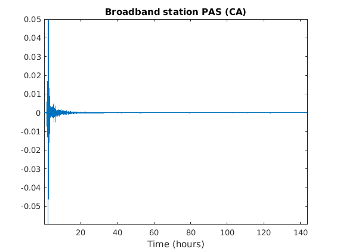

Homework 2:
Normal mode observations, Polarization analysis and component rotation Rebekah Lee Due 2/13/17
Contents
Part 1 Normal Mode Observations
% *1. Plot the raw time series; use dimension hours on the time axis* % Load the data load('sumatra.txt') % create the time vector n = length(sumatra); dt = 10; %seconds t = 1:dt:n*10; % time in seconds t = t./3600; %time in hours % plot the raw data figure(1); plot(t,sumatra) title('Broadband station PAS (CA)') xlabel('Time (hours)') axis tight % *2. Fourier transform the time series and plot amplitude and unwrapped % phase spectra; use dimension mHz on the frequency axis*